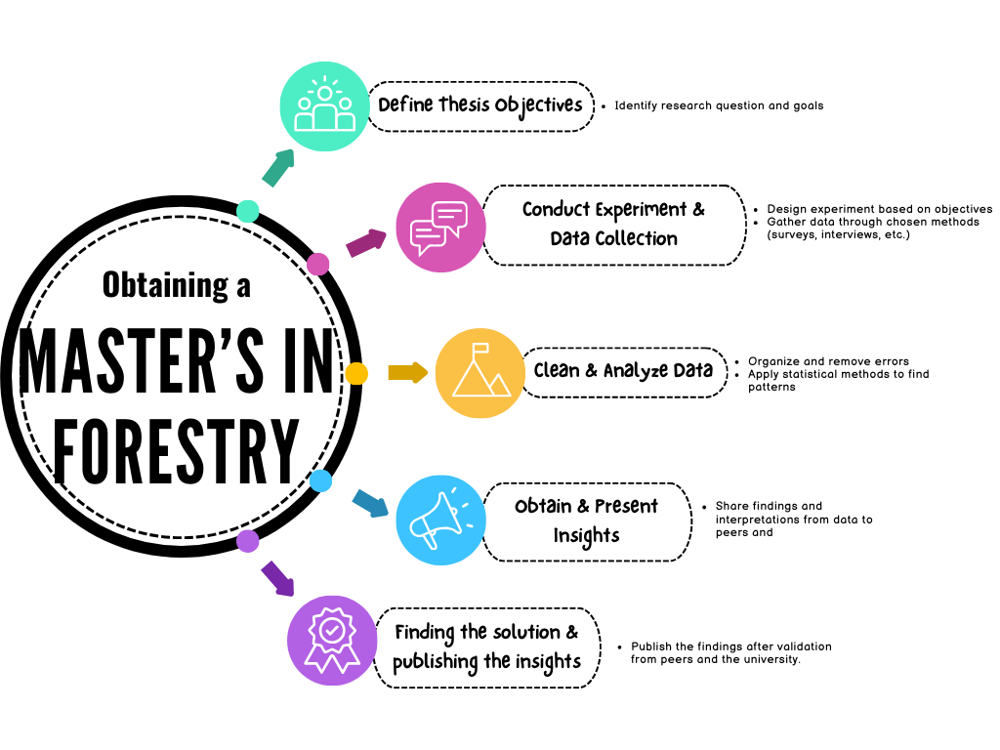
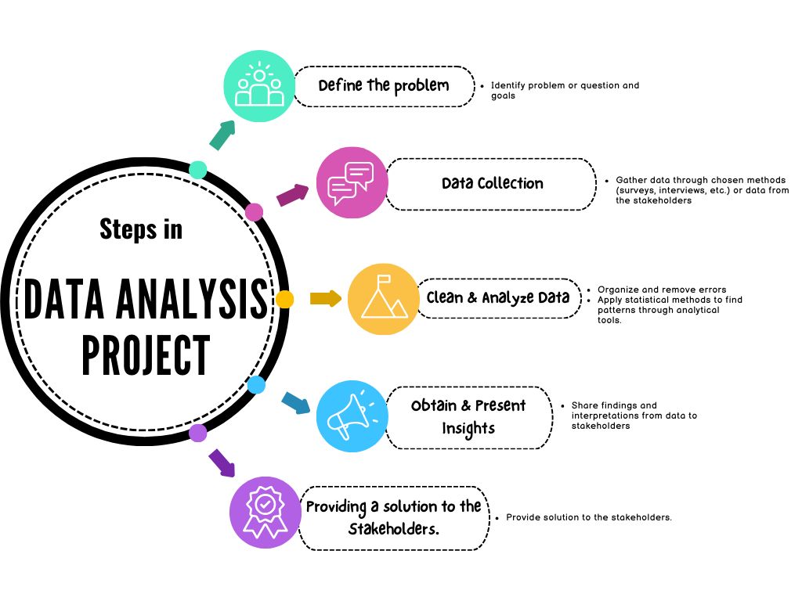

0.1 Why Data Analytics for a Forestry Graduate?
As a Forestry graduate, I often encounter questions about my choice of pursuing a career in Data Analytics and how it aligns with my background and a Master’s degree. Here’s why Data Analytics is a compelling path for me, and for anyone with a Master’s degree seeking a versatile career:
0.2 Is a Degree Necessary?
Flexibility: Data Analytics roles often do not mandate a specific degree. Certifications from renowned companies like Google, Microsoft, and IBM offer comprehensive projects, providing hands-on experience crucial for real-world application.
Foundational Knowledge: Proficiency in Algebra, Arithmetic, and Statistics serves as a solid foundation. Aspirations for roles like Data Scientist may necessitate mastering advanced statistical concepts such as linear regression and A/B testing.
The Degree Advantage: While some large firms may prefer degrees in fields like Computer Science or Statistics, showcasing strong project portfolios can outweigh specific educational backgrounds during recruitment.
This blend of practical experience, foundational knowledge, and adaptability makes Data Analytics an attractive career choice for individuals from diverse academic backgrounds, including Forestry.
0.3 Can a Master’s in Forestry Enhance Data Analytics Skills?
Absolutely
As a Forestry Graduate, my college experience has been instrumental in honing my abilities for real-world application and problem-solving, fostering a comprehensive understanding of how to tackle practical challenges. The process of data analytics, akin to crafting a thesis, involves numerous overlapping steps. In my journey, I’ve found my degree to be profoundly beneficial, particularly in mastering data analysis methods and tools.


Similarities between thesis writing and Data analytics projects
0.4 1. Data Analysis Methods
My education equipped me with a solid foundation in statistical principles, ranging from fundamental concepts like measures of central tendency (mean, median, mode) and Standard Deviation(SD), which I delved into during my undergraduate Fundamentals of Statistics course. Building upon this, my master’s program delved into advanced statistical methodologies essential for applied sciences during Statistical methods for applied Sciences, covering topics such as probability, correlation, linear regression, and ANOVA. These advanced concepts proved invaluable in my thesis work, where I utilized techniques like ANOVA to assess statistical significance. Apart from statistical concepts I got to know how to handle data for cleansing, manipulating and archiving after its life cycle.
0.5 2. Data Analysis Tools
While traditional tools like Microsoft Excel remain ubiquitous for data analysis tasks such as storage, cleaning, analysis, and visualization, my exposure to such tools during my academic pursuits was essential. Excel, in particular, proved indispensable for visualizing data and conducting operations like ANOVA.
For those interested, I’ve also delved into projects employing the R language, which can be explored further on my blog.
Is a Master’s Degree Sufficient for Data Analytics?
While a master’s degree undoubtedly provides a solid foundation in data analytics, it may not always suffice for roles requiring proficiency in specific tools like SQL, programming languages, or BI tools. Many organizations prioritize candidates familiar with these technologies. Hence, it’s advisable to augment academic learning with practical experience and familiarity with a diverse array of tools, thereby enhancing employability prospects.